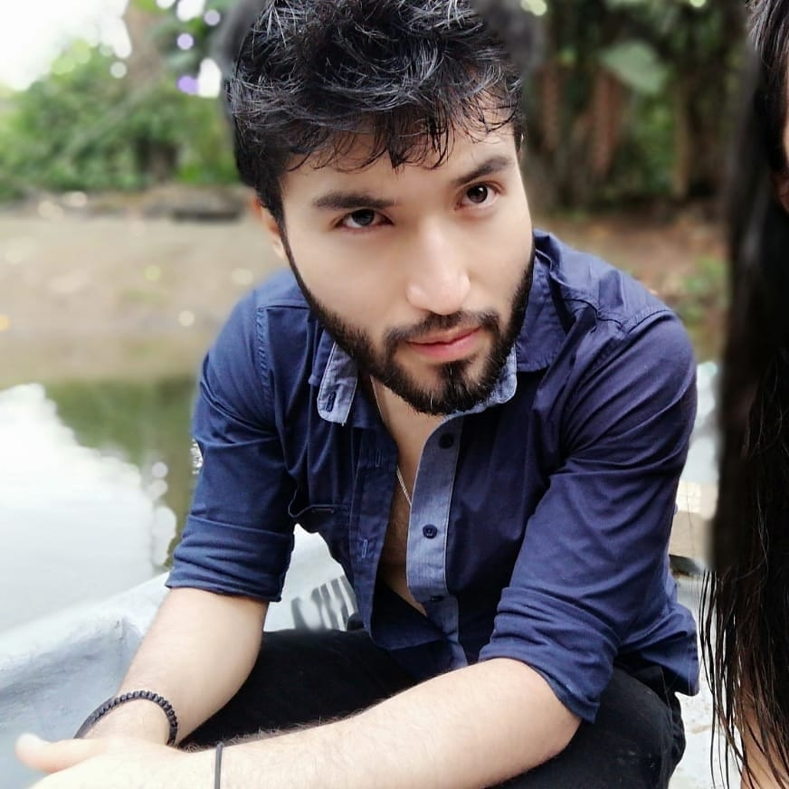
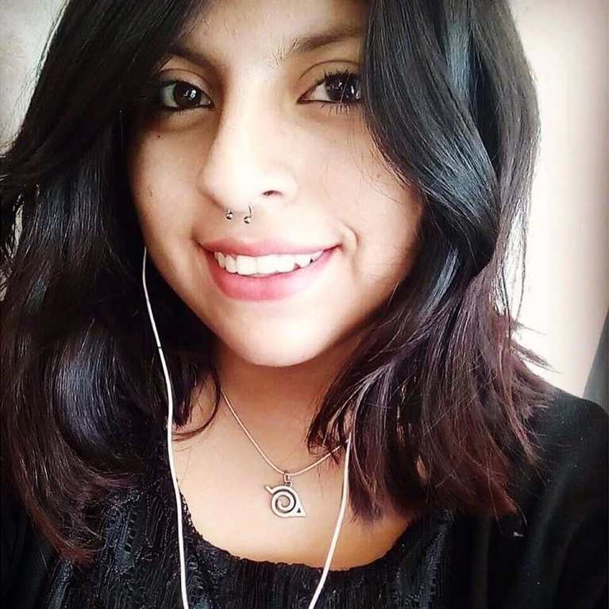

PresidenteDiego Barreno Celleri es un experto baterista con tendencias a ritmos rápidos y pesados variantes del metal. También posee una gran voz. Además de presidir el club es profesor de batería y canto. Por otra parte, se encarga de la organización de eventos. Contacto: diego.barreno@yachaytech.edu.ec |  |
VicepresidentaKaren Albán Jácome posee una prodijiosa voz que la ha llevado a formar parte de numerosas bandas dentro y fuera de la Universidad, además de destacarse como solista. Ella también es profesora de canto dentro del club y maneja las finanzas del mismo. Contacto: karen.alban@yachaytech.edu.ec |  |